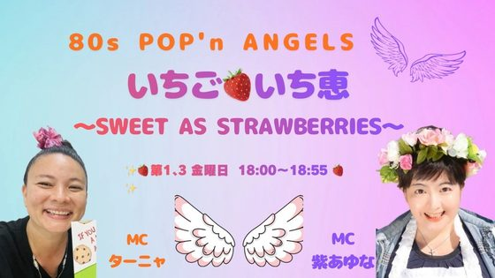
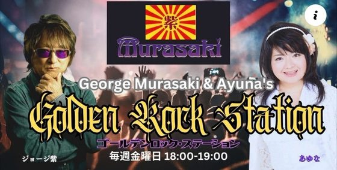
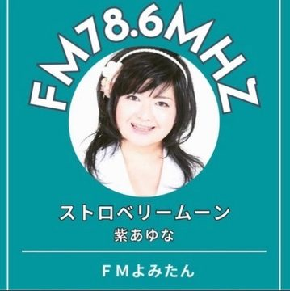
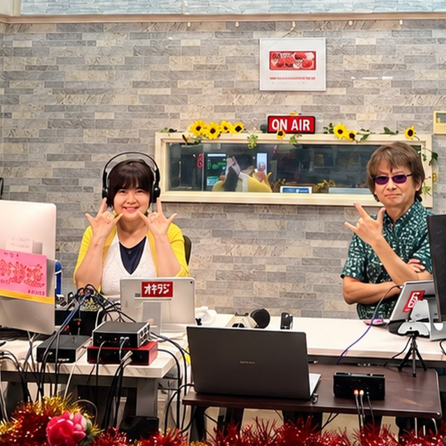

Programs & On Air
番組と放送日
ゲストをお招きして、沖縄の音楽やイベントをご紹介しています。
周波数を合わせて、お聴きいただけましたら嬉しいです。
オキラジ 85.4MHz
毎週金曜日 18:00〜18:55（2つの番組を、月2回ずつ）

第1・第3金曜日「80s POP'n ANGELS いちごいち恵」
第2・第4金曜日「George Murasaki & Ayuna's Golden Rock Station」
FM読谷 78.6MHz
毎週金曜日 13:00〜13:55

「ストロベリームーン」（ひとりで担当している番組）
FMコザ 76.1MHz
第2土曜日 20:00〜20:55
- ロベルトさんの番組で、アシスタントを務めています（6〜7年ほど）
Guest
ゲスト出演のご相談
-

あなたのお仕事への想いを、声にのせて
各分野でご活躍のみなさまや、地域のお店・事業者の方をゲストにお招きし、活動への想いをじっくり伺っています。
番組へのご出演のご相談も承ります。